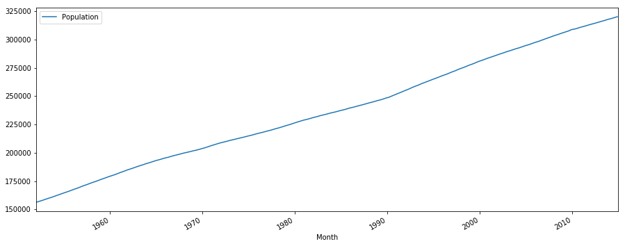
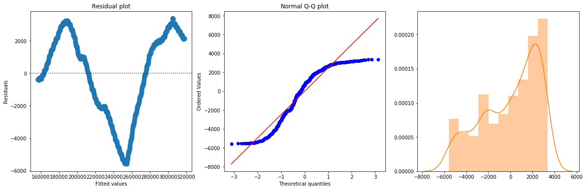
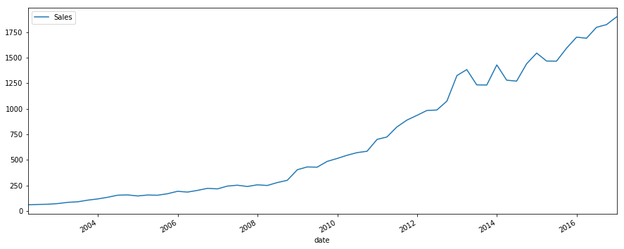
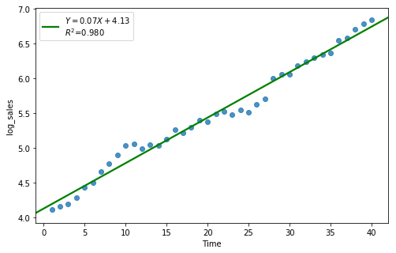
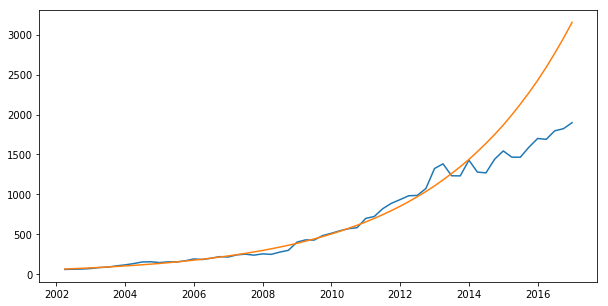

[1]:
%run ../initscript.py
HTML("""
<div id="popup" style="padding-bottom:5px; display:none;">
<div>Enter Password:</div>
<input id="password" type="password"/>
<button onclick="done()" style="border-radius: 12px;">Submit</button>
</div>
<button onclick="unlock()" style="border-radius: 12px;">Unclock</button>
<a href="#" onclick="code_toggle(this); return false;">show code</a>
""")
[1]:
[26]:
%run loadtsfuncs.py
from ipywidgets import *
%matplotlib inline
import warnings
warnings.filterwarnings('ignore')
toggle()
[26]:
Forecasting with Regression¶
Many time series follow a long-term trend except for random variation which can be modeled by regression:
\begin{equation*} Y_t = a + b t + e_t \end{equation*}
Example: Monthly US population.
[11]:
df = pd.read_csv(dataurl+'Regression1.csv', parse_dates=['Month'], header=0, index_col='Month')
plot_time_series(df, 'Population', freq='', title='')

The plot indicates a clear upward trend with little or no curvature. Therefore, a linear trend is plausible.
[19]:
df = pd.read_csv(dataurl+'Regression1.csv', parse_dates=['Month'], header=0, index_col='Month')
_ = analysis(df, 'Population', ['Time'], printlvl=4)
OLS Regression Results
==============================================================================
Dep. Variable: Population R-squared: 0.997
Model: OLS Adj. R-squared: 0.997
Method: Least Squares F-statistic: 2.467e+05
Date: Wed, 01 May 2019 Prob (F-statistic): 0.00
Time: 20:37:28 Log-Likelihood: -7011.3
No. Observations: 756 AIC: 1.403e+04
Df Residuals: 754 BIC: 1.404e+04
Df Model: 1
Covariance Type: nonrobust
==============================================================================
coef std err t P>|t| [0.025 0.975]
------------------------------------------------------------------------------
Intercept 1.565e+05 188.045 832.084 0.000 1.56e+05 1.57e+05
Time 213.7755 0.430 496.693 0.000 212.931 214.620
==============================================================================
Omnibus: 112.704 Durbin-Watson: 0.000
Prob(Omnibus): 0.000 Jarque-Bera (JB): 67.588
Skew: -0.600 Prob(JB): 2.11e-15
Kurtosis: 2.160 Cond. No. 875.
==============================================================================
Warnings:
[1] Standard Errors assume that the covariance matrix of the errors is correctly specified.
standard error of estimate:2582.62518


The linear fit has a very high R-squared, but is not perfect, as the residual plot indicates.
Example: Quarterly PC device sales.
[29]:
df_reg = pd.read_csv(dataurl+'Regression2.csv', parse_dates=['Quarter'], header=0)
df_reg['date'] = [pd.to_datetime(''.join(df_reg.Quarter.str.split('-')[i][-1::-1]))
+ pd.offsets.QuarterEnd(0) for i in df_reg.index]
df_reg = df_reg.set_index('date')
plot_time_series(df_reg, 'Sales', freq='', title='')

[32]:
df_reg['log_sales'] = np.log(df_reg['Sales'])
df_reg[:40].tail()
[32]:
| Quarter | Sales | Time | log_sales | |
|---|---|---|---|---|
| date | ||||
| 2010-12-31 | Q4-2010 | 700.19 | 36 | 6.551352 |
| 2011-03-31 | Q1-2011 | 723.98 | 37 | 6.584764 |
| 2011-06-30 | Q2-2011 | 821.90 | 38 | 6.711619 |
| 2011-09-30 | Q3-2011 | 889.26 | 39 | 6.790390 |
| 2011-12-31 | Q4-2011 | 935.33 | 40 | 6.840899 |
[42]:
result = analysis(df_reg[:40], 'log_sales', ['Time'], printlvl=4)
df_reg['forecast'] = np.exp(df_reg['Time']*result.params[1] + result.params[0])
OLS Regression Results
==============================================================================
Dep. Variable: log_sales R-squared: 0.980
Model: OLS Adj. R-squared: 0.980
Method: Least Squares F-statistic: 1871.
Date: Wed, 01 May 2019 Prob (F-statistic): 6.24e-34
Time: 20:47:22 Log-Likelihood: 32.394
No. Observations: 40 AIC: -60.79
Df Residuals: 38 BIC: -57.41
Df Model: 1
Covariance Type: nonrobust
==============================================================================
coef std err t P>|t| [0.025 0.975]
------------------------------------------------------------------------------
Intercept 4.1302 0.036 116.035 0.000 4.058 4.202
Time 0.0654 0.002 43.252 0.000 0.062 0.069
==============================================================================
Omnibus: 0.388 Durbin-Watson: 0.415
Prob(Omnibus): 0.824 Jarque-Bera (JB): 0.062
Skew: -0.090 Prob(JB): 0.969
Kurtosis: 3.071 Cond. No. 48.0
==============================================================================
Warnings:
[1] Standard Errors assume that the covariance matrix of the errors is correctly specified.
standard error of estimate:0.11045


[49]:
plt.subplots(1, 1, figsize=(10,5))
plt.plot(df_reg.index, df_reg.Sales, df_reg.forecast)
plt.show()
